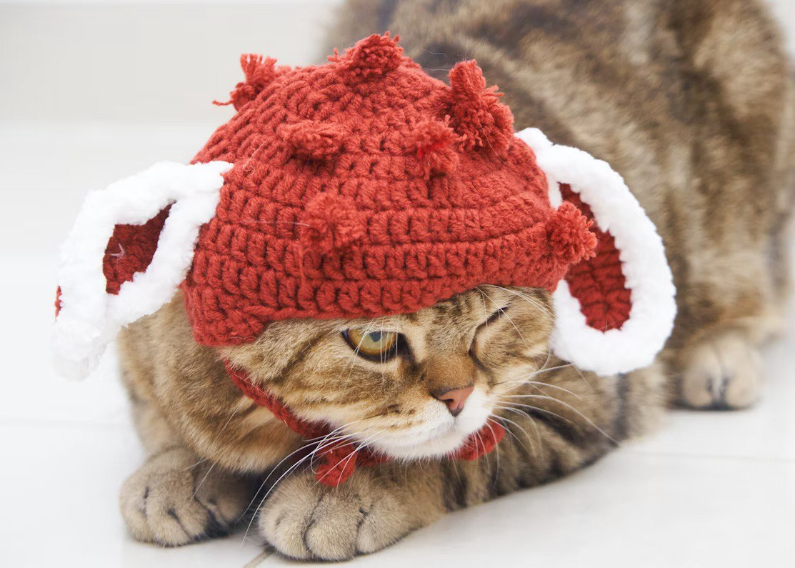
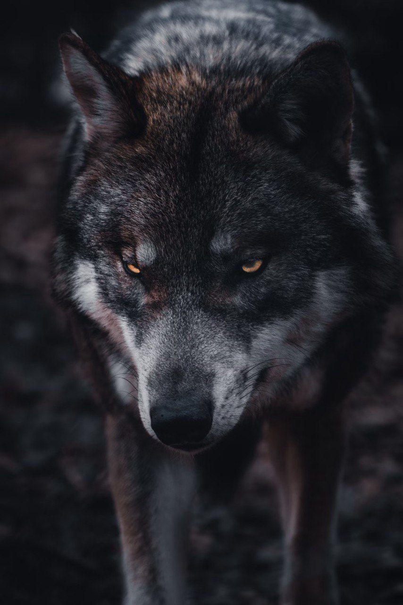

Little Red Ridind Hood
Su abuela le regaló a una niña una gorra roja. A la niña le gustó tanto este regalo que empezó a usarlo en todas partes, tras lo cual recibió el sobrenombre de "Caperucita Roja". Una vez, la madre de Caperucita Roja le pidió que fuera a visitar a su abuela y le llevara las tartas viejas y un tarro de mantequilla.
La niña rápidamente hizo las maletas para un largo viaje y fue de visita. En el bosque conoció al Lobo, quien, al enterarse por la niña de adónde iba, le mostró un camino largo y él mismo corrió hacia su abuela por un camino corto. Tenía mucha hambre y con gusto se habría comido a la niña, pero "en algún lugar cercano los leñadores golpeaban sus hachas" y no se atrevió a atacarla. Caperucita Roja no sospechó nada extraño. Se tomó su tiempo a lo largo del camino más largo, se detuvo y recogió flores.

El lobo tenía mucha hambre porque hacía tres días que no había comido nada. Al ver a la anciana indefensa, inmediatamente se la tragó. Luego se acostó en la cama de su abuela y comenzó a esperar a Caperucita Roja.
Cuando llegó Caperucita Roja, inmediatamente sospechó que algo andaba mal y comenzó a preguntarle a la "abuela" por qué todas las partes de su cuerpo habían cambiado tanto (manos, ojos, dientes). La pregunta sobre los dientes grandes fue la última para la niña: el lobo se la tragó. Menos mal que los leñadores llegaron a tiempo y le abrieron el vientre al ladrón gris. Y de allí salieron Caperucita Roja y la Abuelita, vivas e ilesas.